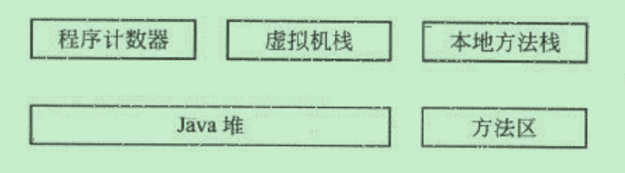

java虚拟机内存模型
JVM内存模型
Java虚拟机(JVM)内存分布图

JVM将内存数据分为程序计数器、虚拟机栈、本地方法栈、Java堆、方法区5个部分
程序计数器用于存放下一条运行的指令
虚拟机栈和本地方法栈用于存放函数调用堆栈信息
Java堆用于存放Java程序程序运行时所需的对象等数据
方法区用于存放程序的类元数据信息
程序计数器
作用：用于记录下一条要运行的指令。
程序计数器是一块很小的内存空间。java的每一个线程都必须用一个独立的程序计数器，用于记录下一条要运行的指令。各个线程之间的计数器互不影响，独立工作，是一块线程私有的内存空间。
如果当前线程正在执行一个java方法，则程序计数器记录正在执行的Java字节码地址，如果当前线程正在执行一个Native方法，则程序计数器为空。
Java虚拟机栈
作用：管理Java函数的调用。
java虚拟机栈也是一块线程私有的内存空间，他和java线程在同一时间创建，它保存方法的局部变量、部分结果，并参与方法的调用和返回。
Java虚拟机规范允许Java栈的大小是动态或者固定，Java虚拟机规范中，定义了两种异常与栈空间有关：StacOverflowError和OutOfMemoryError.
如果线程在计算过程中，请求的栈深度大于最大可用深度，则抛出StackoverflowError;如果Java栈可以动态扩展，而在扩展栈的过程中，没有足够内存空间来支持栈的拓展，则抛出OutOfMemoryError。
在HotSpot虚拟机中，可以使用-Xss参数来设置栈的大小，
本地方法栈
作用：管理本地方法的调用。
本地方法并不是Java实现的，而是使用C实现的。
在HotSpot虚拟机中，不区分本地方法栈和虚拟机栈。因此，和虚拟机栈一样，它会抛出StackOverflowError和OutOfMemoryError。
Java堆
作用：存放所有对象和数组。